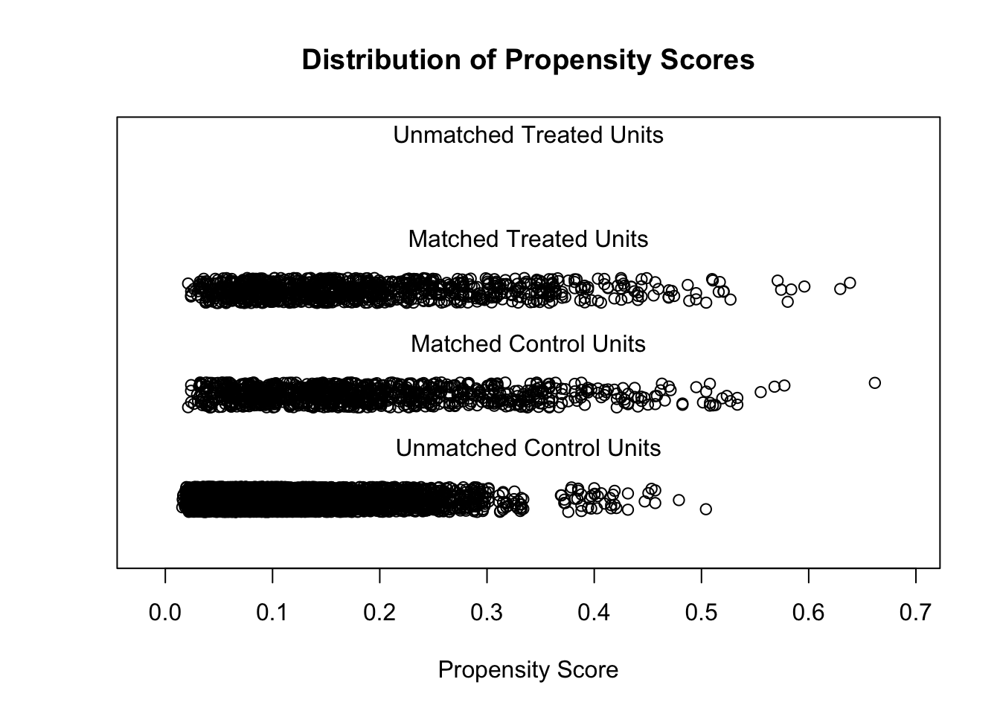

Propensity score (PS) is the probability of receiving certain treatments, conditional on observed baseline covariates, and is estimated by using modeling to predict treatment allocation with covariates. In simple terms, PSA is based on the hypothesis that two patients with similar PSs have covariates which come from similar distributions. This means that by selecting or reweighting samples based on PS, researchers create new datasets where covariates are similar between treatment and control groups. For each individual, the propensity score can be intuitively considered as the probability of recentiving treatment, calcuated from a range of covariates (and potential confounders).
When compared with conventional balancing methods, PS analysis has two major advantages: dimension reduction and design separation.
I took an example from this R blogger post, where the research question was asked:
Is smoking associated with psychological distress?
Each smoker in the dataset will be matched to a non-smoker based on a range of covariates, e.g., sex, indigenous status, high school completion, marital status, region of residence, langauge background, age, and risky alcohol use.
Two steps were taken for propensity score matching:
Match each smoker to a non-smoker based on propensity score, which is calculated based on a range of covariates.
Check if balance between smokers (i.e., the treated or exposed group) and non-smokers (i.e., the control group) is achieved. We want both groups to have similar characteristics.
Note
There are six steps in a complete analysis using propensity score matching:
Preprocess data sets, identify outliers, and interpolate missing values.
A model is specified, such as logistic regression, and trained on the dataset to predict whether a patient will be treated. For every patient, the trained model generates a probability of receiving treatment; i.e., his or her PS.
Matching based on PS, where different matching methods are tried, such as nearest neighbor, or optimal or genetic matching
The balance of covariates between treatment and control groups is checked by calculating balance statistics and generating plots. A poor balance indicates that the model estimating PS needs to be respecified.
The treatment effects are estimated using matched data.
Sensitivity analyses are performed to check the robustness of study results for hidden bias
We will use data from this R blogger post.
Load libraries and data
library(tidyverse)
── Attaching core tidyverse packages ──────────────────────── tidyverse 2.0.0 ──
✔ dplyr 1.1.4 ✔ readr 2.1.5
✔ forcats 1.0.0 ✔ stringr 1.5.1
✔ ggplot2 3.5.1 ✔ tibble 3.2.1
✔ lubridate 1.9.3 ✔ tidyr 1.3.1
✔ purrr 1.0.2
── Conflicts ────────────────────────────────────────── tidyverse_conflicts() ──
✖ dplyr::filter() masks stats::filter()
✖ dplyr::lag() masks stats::lag()
ℹ Use the conflicted package (<http://conflicted.r-lib.org/>) to force all conflicts to become errors
library(MatchIt)library(lmtest)
Loading required package: zoo
Attaching package: 'zoo'
The following objects are masked from 'package:base':
as.Date, as.Date.numeric
Rows: 8000 Columns: 10
── Column specification ────────────────────────────────────────────────────────
Delimiter: ","
dbl (10): sex, indigeneity, high_school, partnered, remoteness, language, sm...
ℹ Use `spec()` to retrieve the full column specification for this data.
ℹ Specify the column types or set `show_col_types = FALSE` to quiet this message.
Sex (0: Female; 1: Male) indigenous - Ingigenous status (0: Non-indigenous; 1: indigenous) high_school - Education level (0: not finished high school; 1: finished high school) partnered - Marital status (0: not partnered; 1: partnered) remoteness - region of residence (0: major cities; 1: inner regional; 2: outer regional) language - Language background (0: non-English speaking; 1: English speaking) Smoker - Smoking status (0: non-smoker; 1: smoker) risky_alcohol - Risky alcohol use (0: not risky; 1: risky) psyc_distress - Psychological distress. Measure ranges from 10 to 50. age - Age of the participants
The MatchIt R package
MatchIt implements the suggestions of Ho et al. (2007) for improving parametric statistical models for estimating treatment effects in observational studies and reducing model dependence by preprocessing data with semi-parametric and non-parametric matching methods. After appropriately preprocessing with MatchIt, researchers can use whatever parametric model they would have used without MatchIt and produce inferences that are more robust and less sensitive to modeling assumptions. MatchIt reduces the dependence of causal inferences on commonly made, but hard-to-justify, statistical modeling assumptions using a large range of sophisticated matching methods. The package includes several popular approaches to matching and provides access to methods implemented in other packages through its single, unified, and easy-to-use interface.
Run propensity matching
# Using the mathcit function from MatchIt to match each smoker with a non-smoker (1 to 1 matching) based on#sex, indigeneity status, high school completion, marital status (partnered or not),#region of residence (major cities, inner regional, outer regional), language background (English speaking Yes/No) #and risky alcohol drinking (Yes/No)match_obj <-matchit(smoker ~ sex + indigeneity + high_school + partnered + remoteness + language + risky_alcohol + age,data = data, method ="nearest", distance ="glm",ratio =1,replace =FALSE )summary(match_obj)
Call:
matchit(formula = smoker ~ sex + indigeneity + high_school +
partnered + remoteness + language + risky_alcohol + age,
data = data, method = "nearest", distance = "glm", replace = FALSE,
ratio = 1)
Summary of Balance for All Data:
Means Treated Means Control Std. Mean Diff. Var. Ratio eCDF Mean
distance 0.1850 0.1130 0.6310 2.0638 0.2035
sex 0.4938 0.4421 0.1035 . 0.0518
indigeneity 0.0524 0.0175 0.1565 . 0.0349
high_school 0.4220 0.6378 -0.4370 . 0.2158
partnered 0.4630 0.6913 -0.4578 . 0.2283
remoteness 0.6119 0.4553 0.1969 1.2318 0.0522
language 0.9579 0.9130 0.2234 . 0.0449
risky_alcohol 0.6427 0.5411 0.2120 . 0.1016
age 51.6057 53.7824 -0.1676 0.8214 0.0441
eCDF Max
distance 0.3204
sex 0.0518
indigeneity 0.0349
high_school 0.2158
partnered 0.2283
remoteness 0.0921
language 0.0449
risky_alcohol 0.1016
age 0.1020
Summary of Balance for Matched Data:
Means Treated Means Control Std. Mean Diff. Var. Ratio eCDF Mean
distance 0.1850 0.1845 0.0042 1.0213 0.0002
sex 0.4938 0.4887 0.0103 . 0.0051
indigeneity 0.0524 0.0390 0.0599 . 0.0133
high_school 0.4220 0.4045 0.0353 . 0.0175
partnered 0.4630 0.4713 -0.0165 . 0.0082
remoteness 0.6119 0.6078 0.0052 1.0051 0.0014
language 0.9579 0.9671 -0.0460 . 0.0092
risky_alcohol 0.6427 0.6561 -0.0279 . 0.0133
age 51.6057 51.9723 -0.0282 0.9175 0.0145
eCDF Max Std. Pair Dist.
distance 0.0103 0.0053
sex 0.0051 0.3019
indigeneity 0.0133 0.2627
high_school 0.0175 0.1767
partnered 0.0082 0.1977
remoteness 0.0021 0.3563
language 0.0092 0.0665
risky_alcohol 0.0133 0.1350
age 0.0370 0.2881
Sample Sizes:
Control Treated
All 7026 974
Matched 974 974
Unmatched 6052 0
Discarded 0 0
Plot results
plot(match_obj, type ="jitter")

To identify the units, use first mouse button; to stop, use second.